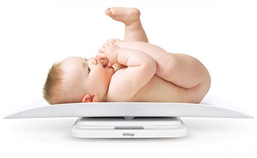
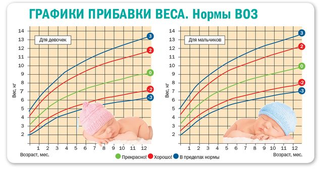
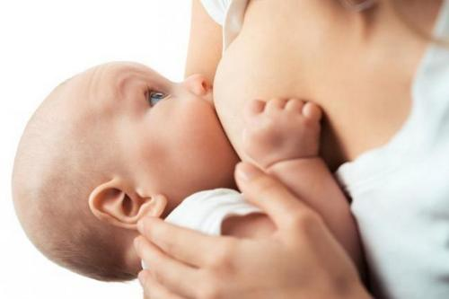

Термин «нежелание процветать» не стоит использовать, потому что мамы очень чувствительны к набору ребенком веса и роста и нам не нравится впечатление, которое производит это словосочетание. Младенцы могут не соответствовать стандартным диаграммам роста и веса по множеству немедицинских и не связанных с питанием причин. Часто это просто — генетика в действии или быстрый метаболизм, который сжигает все дополнительно потребляемые калории. Вот наше руководство, где мы описываем механизмы снижения скорости роса и набора веса (СРНВ), рассказываем, как определить причины и что с этим делать.
ПРИЗНАКИ
Определение СРНВ — любой ребенок, который в течение нескольких месяцев недостаточно прибавляет в весе. Рост и окружность головы обычно не страдают (если речь не идет о серьезной недостаточности питания). Вот как врач может поставить диагноз:
Уплощение кривой роста. Рост младенца измеряется при каждом осмотре, и показатель откладывается на графике. Ребенок, родившийся крупным, будет, как правило, оставаться в верхней части кривой на протяжении первых 6 месяцев жизни. У любого младенца, который за несколько месяцев значительно опускается по этой кривой, может быть СРНВ. Падение на 25 процентилей за два месяца означает возможное наличие СРНВ (например, вес младенца был на линии 50 процентилей в 2 месяца и уменьшился до 25 процентилей к 4 месяцам). Еще более беспокоящим будет большее падение (крупный ребенок с 75 процентилей опустился до 25 за 2—4 месяца, или младенец с 40 процентилей спустя несколько месяцев опустился ниже 5 процентилей).
Низкая энергия и мышечный тонус. Ребенок, который получает недостаточно калорий, будет менее активным, его моторное развитие будет замедленным. Вместо того чтобы сидеть на коленях у мамы, оглядываясь, размахивая руками и пылко взаимодействуя со всем окружающим, ребенок с СРНВ будет более угнетен, не поднимает и не поворачивает голову, выглядит не столь энергичным.
Бледность кожи. У ребенка с СРНВ может развиться анемия, кожа будет бледной или бледноватой. Полезно сравнить с цветом кожи других членов семьи.
Дряблая кожа. Кожа у младенца будет дряблая, эластичная, морщинистая, особенно на животе.
Мало жировой прослойки. Скорее всего, вы не заметите больших валиков жира на ногах, руках, шее и животе младенца с СРНВ.
Не всегда легко определить, является ли это СРНВ или генетической особенностью. У некоторых совершенно здоровых младенцев может наблюдаться один из вышеперечисленных признаков. Тем не менее, если присутствуют два и больше признаков вкупе с медленным набором веса, следует подозревать СРНВ.
ПРИЧИНЫ
Существует несколько причин СРНВ. Некоторые являются медицинскими, некоторые связаны с питанием. Иногда случаются ошибки и ребенку ставят СРНВ, хотя есть совершенно обоснованное объяснение.
Ошибочный диагноз. Вот несколько причин того, что здоровому, процветающему младенцу (который только немного похудел) могут поставить неправильный диагноз:
Ошибка измерения. Иногда результаты измерения считываются неправильно. Убедитесь, что вы дважды проверили вес при получении низкого результата.

Ошибка при нанесении данных на график. Обычное дело, когда медсестра отмечает вес ребенка (или рост, или окружность головы) на неправильной части диаграммы. Настаивайте, чтобы врач проверил, что отметки вашего ребенка находятся на соответствующей его возрасту и весу линии. Заодно пусть проверит и две предыдущие. При оценке СРНВ очень важно правильно отмечать набор веса на диаграмме.
Младенец на грудном вскармливании. Обычно дети, вскармливаемые грудью, в первые несколько месяцев набирают вес так же, как и питающиеся молочной смесью. Но повышение активности на третьем-четвертом месяцах (брыкание, переворачивание, размахивание руками) может привести к тому, что вскармливаемый грудью младенец немного похудеет. Еще чаще дети худеют между 6-м и 15-м месяцами, когда начинают ползать и ходить. Младенцы, вскармливаемые грудью, быстрее сжигают свой детский жирок, чем питающиеся смесью (это скорее хорошо). Они склонны «скатываться по кривой», потому что наш американский стандарт набора веса (выведенный с учетом веса вскармливаемого смесями большинства) не учитывает этого похудения питающихся грудным молоком. Попросите своего врача сравнить рост вашего младенца с графиком ВОЗ для младенцев, вскармливаемых грудью (доступен онлайн), прежде чем ставить ему диагноз СРНВ.

Наследственность. У худых мамы и папы получится худой ребенок. Он не обязательно родится худым, но будет чаще худеть в младенчестве, если его кормить грудью. Если вес недостаточный, но у ребенка нет ни одного из признаков, описанных выше, — это не недостаточный рост и недостаточный вес (НРНВ). Тем не менее важно определить возможные причины отставания физического развития (см. ниже), хотя родителям и врачам пока не стоит переходить в «режим тревоги».
Истинный недостаточный рост и набор веса. Исключив ошибку измерения и занесения результатов, рассмотрев наследственность и особенности метаболизма при грудном вскармливании, переходите к рассмотрению причин истинного СРНВ. Их можно разделить на две категории: недостаточное поступление питательных веществ и несоответствующий расход питательных веществ.
Недостаточное поступление питательных веществ. Наиболее распространенная причина — ребенок просто недостаточно ест.
• Смеси. Младенец, питающийся смесями, должен ежедневно получать около 2—21/2 унций (56—71 мл) смеси на каждый фунт (450 г) своего веса. Таким образом, 10-фунто вый младенец (4,5 кг) должен получать 20—25 унций (560—710 мл) смеси каждые 24 часа. Если это проблематично, решение простое. Давайте ребенку больше смеси и чаще.
Кормление грудью. Так как мы не можем прямо подсчитать, сколько молока получил ребенок, трудно сказать, связана ли проблема с лактацией матери или ребенок недостаточно выпивает молока при достаточной лактации. Мама может считать, что у нее много молока или что ребенок хорошо ест и наедается при каждом кормлении. Но иногда и мама, и врач могут ошибаться. Помощь консультанта по грудному вскармливанию в улаживании этого вопроса может быть неоценимой. Необходимо несколько раз провести контрольное взвешивание ребенка до и после кормления.
Слабое или нескоординированное сосание.

Несоответствующий расход питательных веществ. То, что младенец получает молоко, не означает, что он его усваивает. У него могут быть различные нарушения пищеварения (например, диарея при лактазной недостаточности).
• Аллергия на смесь.
Пищевая аллергия через грудное молоко. Если у вашего младенца постоянно зеленый, жидкий или слизистый стул (вместо классического желтого, кашицеобразного стула, который должен быть у младенца при грудном вскармливании), чтобы узнать, как начать исключать подозрительные продукты из вашего питания.
Хронические заболевания. Муковисцидоз — частая причина СРЫВ. Ваш врач рассмотрит эти причины и при необходимости сделает анализы.
ЛЕЧЕНИЕ
Вмешательство главным образом направлено на поиск причины и устранение ее. Если причина не найдена, ключевым будет обеспечение достаточного поступления пищи. Кормящей матери не всегда легко решиться начать докармливать смесью младенца с СРНВ.
С помощью консультанта по грудному вскармливанию вы может восстановить лактацию и вернуться к кормлению грудью. Если ребенок не начнет набирать больше веса, докорм смесью (как совместное решение ваше, вашего врача и консультанта по грудному вскармливанию) может быть необходим.
НРНВ У МЛАДЕНЦЕВ ПОСЛЕ 6 МЕСЯЦЕВ И МАЛЫШЕЙ ОТ ГОДА ДО ТРЕХ
НРНВ может развиваться и после года. Прибавки веса очень варьируют в этом возрасте, и многие дети могут похудеть, будучи совершенно здоровыми. Вы можете использовать приведенные выше принципы, которые помогут вам и вашему врачу решить, на самом ли деле есть проблема. Лечение, однако, будет отличаться, потому что теперь вы можете использовать твердые продукты. В целом, если малыш хороший едок, с удовольствием ест при каждом приеме пищи и перекусывает в перерывах, вы можете быть уверены, что его худоба — не из-за недостатка питания. Удостоверьтесь, что у него нет никаких хронических заболеваний, которые могли бы способствовать нарушению усвоения питательных веществ. Если с этими двумя моментами все в порядке, можете списать все на наследственность и быстрый обмен веществ. Если же ребенок — чрезвычайно разборчивый едок и вы чувствуете, что недостаточное питание может играть роль, вот некоторые продукты, с помощью которых вы увеличите содержание жиров, белков и калорий в каждом проглоченном кусочке. Мы называем их «едой для роста»:
Вы можете также поговорить с диетологом, чтобы он помог подсчитать потребление калорий вашим ребенком и разработал меню и стратегию кормления.
Здоровье ребенка от докторов Сирс / Сирс У. и др.